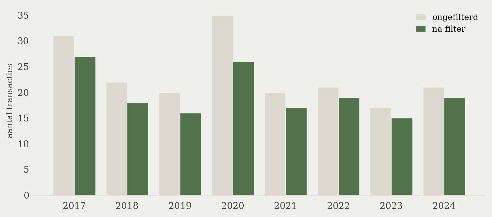
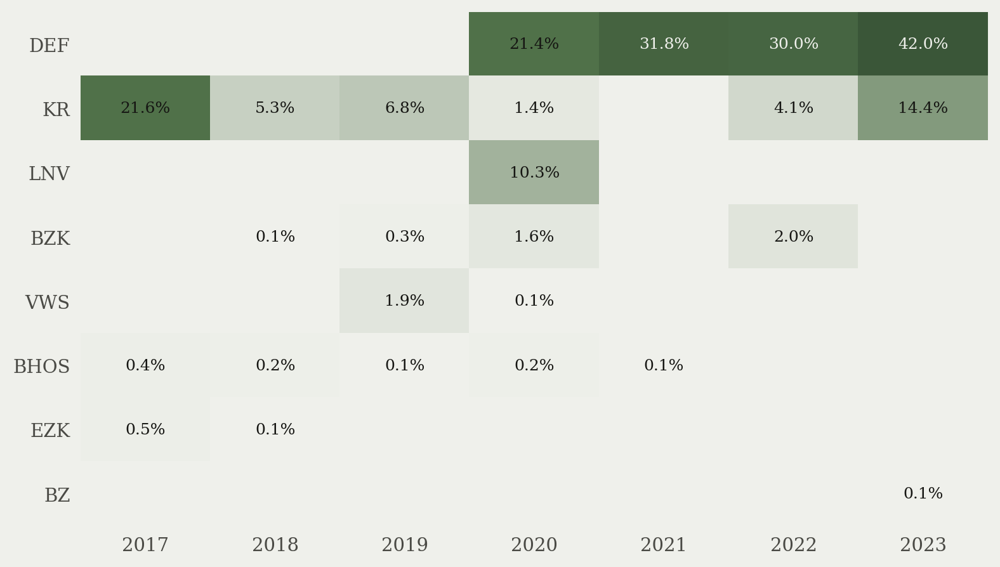
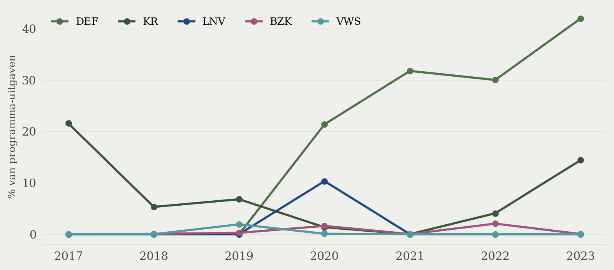
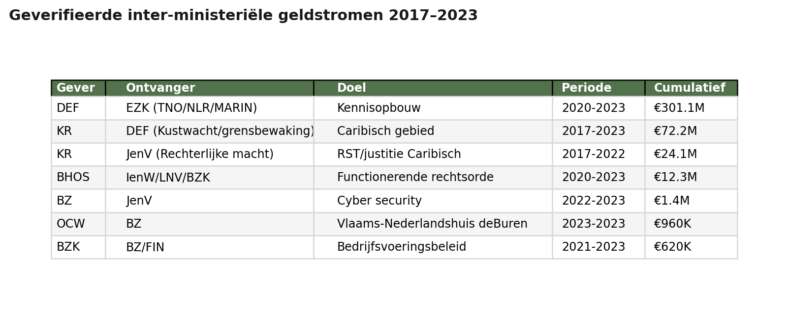
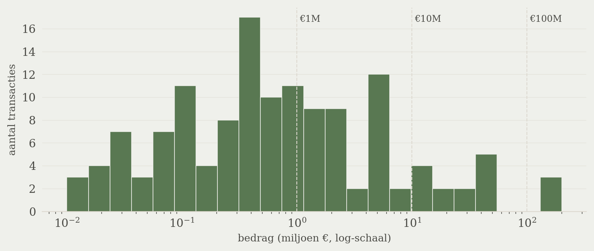

Geld over de schutting
Hoe vaak en waarvoor maken ministeries geld over aan andere ministeries
Ministeries maken geregeld geld over aan andere ministeries. Niet veel, en niet groot, maar vaak genoeg om als structureel patroon zichtbaar te zijn in de rijksjaarverslagen. Tussen 2017 en 2023 staan 157 zulke transacties geboekt onder het instrument *Bijdrage aan andere begrotingshoofdstukken* — samen goed voor circa €1 miljard. Het overgrote deel van dat bedrag zit in zeven herhalende kanalen.
Wat we hebben onderzocht (H2)
De rijksjaarverslagen leggen voor elke uitgave vast onder welk financieel instrument hij valt. Een van die instrumenten heet, in beleidstaal, *Bijdrage aan (andere) begrotingshoofdstukken*. Het is de boekhoudkundige term voor: dit ministerie betaalt iets dat op de begroting van een ánder ministerie wordt verantwoord.
Vraag: hoe vaak en waarvoor gebeurt dat? En geeft het beeld een stelling met empirisch fundament — namelijk dat ministeries gedeelde capaciteit gewoon samen financieren, en dat dat onder de rijksoverheid een ingesleten praktijk is.
We pakten daarvoor de open dataset *Financiële instrumenten 2017-2024* van rijksfinancien.nl: 292.754 rijen, één per jaarverslag-uitgave, voor alle ministeries en alle financiële instrumenten samen. Filtering op het instrument levert 187 transacties op, verspreid over 17 begrotingen.
Wat het op het eerste gezicht lijkt — en wat het niet is (H2)
Het ruwe totaal van €27 miljard suggereert een fors interdepartementaal geldcircuit. Dat klopt niet. Eén ministerie — Infrastructuur en Waterstaat — staat alleen al voor €24 miljard in de teller. Die hele post bestaat uit boekingen waarbij IenW geld overhevelt naar Infrastructuurfonds, Deltafonds of Mobiliteitsfonds. Drie fondsen die juridisch een eigen begrotingshoofdstuk zijn, maar bestuurlijk volledig onder IenW vallen. Het is dezelfde minister die geeft en ontvangt.
Vergelijkbare zelfde-beleidsterrein boekingen: stortingen van EZK in eigen garantiereserves (BMKB, GO, Klein Krediet Corona), de bijdrage van LNV aan het Diergezondheidsfonds, en bijdragen van Buitenlandse Zaken aan het Veiligheidsfonds. Allemaal officieel inter-begrotingshoofdstuk, in praktijk een eigen boekhoudkundige overheveling.
Filteren op zelfde-beleidsterrein boekingen reduceert de set tot **157 transacties** met een gezamenlijke boekwaarde van **€0,98 miljard** over 2017-2023. Dat is het cijfer dat over interdepartementale samenwerking gaat.

Twee ministeries dragen het patroon (H2)
Wie maakt dit geld over? Het aandeel *Bijdrage aan andere begrotingshoofdstukken* in de totale programma-uitgaven van een ministerie is een ruwe maat voor hoe afhankelijk dat ministerie is van inter-departementaal geldverkeer. Twee ministeries vallen op.

**Defensie** maakt vanaf 2020 een sprong: van vrijwel nul in de jaren ervoor naar 21% in 2020, oplopend tot 42% in 2023. Dat is geen toename in absolute Defensie-bestedingen via dit kanaal — Defensie heeft een groot apparaatsbudget dat hier niet in de teller zit. Het is de groei van een specifieke geldstroom, die in jaarverslagen onder de noemer *Kennisopbouw TNO/NLR/MARIN via EZ* terugkomt. Defensie financiert defensie-relevant onderzoek bij TNO, het Nederlands Lucht- en Ruimtevaartcentrum (NLR) en het Maritiem Research Instituut Nederland (MARIN), maar laat de betaling lopen via de begroting van Economische Zaken — daar zitten die instituten institutioneel.
**Koninkrijksrelaties** doet het omgekeerde: 21,6% in 2017, daarna een dip, en weer een opwaartse beweging naar 14,4% in 2023. Hier zijn twee terugkerende kanalen. Eén: KR betaalt mee aan grenstoezicht en kustwacht in het Caribisch deel van het Koninkrijk, geld dat op de Defensie-begroting wordt verantwoord. Twee: KR draagt bij aan de rechterlijke macht (Recherche Samenwerkings Team, openbaar ministerie) op de eilanden, met JenV als ontvanger.

De andere ministeries — BZK, VWS, BHOS — kennen incidentele pieken (LNV in 2020 door een stikstof-overheveling) maar geen structureel patroon op dit instrument.
Zeven kanalen die terugkeren (H2)
Wanneer je kijkt naar individuele transacties die expliciet een ander Nederlands ministerie als ontvanger noemen, of die door jaarverslagen herleidbaar zijn tot een specifieke samenwerking, blijven zeven herhalende geldstromen over.

De Defensie-EZK kennisopbouw is met €301 miljoen verreweg de grootste. Die loopt al langer maar is sinds 2020 sterk geïntensiveerd — in 2023 alleen al €157 miljoen. Het mechanisme: Defensie heeft een onderzoeksbehoefte op een toepassingsgebied (luchtvaarttechnologie, maritieme systemen, dual-use technologie), het toegepast onderzoek zit institutioneel bij TNO/NLR/MARIN onder het EZK-domein, en in plaats van een eigen Defensie-onderzoeksinstituut op te tuigen wordt het bestaande netwerk gebruikt en betaald via een interbudgettaire overboeking.
De Caribische kanalen (KR → Defensie voor grenstoezicht en Kustwacht, KR → JenV voor de rechterlijke macht) volgen een vergelijkbare logica: het werk wordt gedaan door uitvoerende organisaties die institutioneel onder het ene ministerie hangen, het politieke en financiële eigenaarschap van *waarom* dat werk gebeurt, ligt bij een ander.
De kleinere kanalen — BHOS dat bijdraagt aan IenW/LNV/BZK voor *functionerende rechtsorde*, BZ → JenV voor cyber security, OCW → BZ voor het Vlaams-Nederlands cultuurhuis deBuren — zijn hetzelfde patroon op kleinere schaal: een gedeeld doel, één natuurlijke uitvoerder, twee betrokken begrotingen.
Distributie: niets staat op zichzelf (H2)

De verdeling van transactiebedragen is zwaar scheef. **57% van de transacties is kleiner dan €1 miljoen**, 80% kleiner dan €10 miljoen, en de top-15 transacties — 8% van het totaal — beslaan ruim driekwart van de gefilterde geldwaarde. Het beeld is dus niet één van diffuse miljoenenstromen, maar van een lange staart van kleine, vaak terugkerende boekingen plus een handvol grote, doelgerichte transfers.
Wat het instrument niet laat zien (H2)
Belangrijk om bij te zeggen: *Bijdrage aan andere begrotingshoofdstukken* is één van veertien financiële instrumenten in de Rijksbegrotingsvoorschriften. Veel inter-departementale financiering loopt via andere kanalen die in deze dataset niet meekomen.
- **Budgetoverboekingen via suppletoire begrotingen** (Voorjaarsnota, Najaarsnota): technisch een verschuiving van budgetautorisatie tussen begrotingshoofdstukken, geen uitgave op het instrument-niveau.
- **Dienstverleningsovereenkomsten (DVO's)** binnen geautoriseerd budget: ICT-werkplekken die SSC-ICT levert aan andere ministeries, beveiligingsdiensten van AIVD, juridische ondersteuning van Justitie. Die zitten op andere instrumenten of in de apparaatsbegroting.
- **Opdrachtverlening aan agentschappen** van een ander ministerie: bijvoorbeeld DICTU, Logius of RVO die werk uitvoeren voor partijen buiten het eigen moedermininsterie. Verantwoord onder *opdrachten*.
- **Parallelle subsidiëring**: twee ministeries financieren hetzelfde extern doel via eigen subsidiestromen.
Dat betekent: de €1 miljard uit dit onderzoek is een ondergrens. Het werkelijke volume aan inter-departementale financiering is een veelvoud, alleen niet zichtbaar onder dit ene instrument.
Conclusie (H2)
De rijksoverheid kent een handvol structurele kanalen waarmee ministeries elkaar gericht financieren voor gedeelde capaciteit. Ze zijn niet groot in macro-economische zin (€1 miljard over zeven jaar, op een totaal van honderden miljarden rijksuitgaven), maar wel duidelijk patroonmatig. Twee logica's keren steeds terug:
- **Eén instituut, twee belangen.** TNO doet defensie-relevant onderzoek en valt onder EZK; de Kustwacht zit in Defensie maar werkt deels voor Koninkrijksrelaties. Het geld volgt de werkelijke baat, niet de organisatiestructuur.
- **Eén beleidsdoel, gedeelde uitvoering.** Caribische rechtsorde, cyber security, internationaal cultuurbeleid: het belang ligt bij meerdere ministeries, de uitvoeringscapaciteit bij één.
Dit ondersteunt empirisch de stelling dat interdepartementale financiering van gedeelde capaciteit een ingesleten praktijk is binnen de rijksoverheid. Niet omdat er enorme bedragen rondgaan, maar omdat het mechanisme zelf — geld bij het ene ministerie, uitvoering bij het ander — kennelijk werkbaar genoeg is om over decennia te overleven en zelfs te groeien (Defensie-EZK, sinds 2020 een factor 4 toegenomen).
Voor wie nieuwe gedeelde capaciteit wil financieren — bijvoorbeeld een rijksbreed AI-instituut of een centraal data-platform — is dat goed nieuws: het bestuurlijke en boekhoudkundige instrumentarium is er al, en wordt regelmatig gebruikt. De rem ligt elders: in de bereidheid om eigenaarschap te delen, niet in de boekhouding.
Methodologie en bronnen (H2)
Databron (H3)
Financiële instrumenten 2017-2024 van rijksfinancien.nl/open-data. CSV met scheidingsteken puntkomma, 292.754 rijen voor alle ministeries en alle veertien instrumenten samen. Bedragen in x1000 EUR. Juridische grondslag van het instrument: Rijksbegrotingsvoorschriften (RBV), Comptabiliteitswet 2016 art. 2.3 en 2.26.
Bewerking (H3)
Filter op Instrument == "bijdrage aan (andere) begrotingshoofdstukken" levert 187 rijen. Daarvan vielen 30 rijen af als zelfde-beleidsterrein boekingen (IenW-fondsen, EZK-reserves, Diergezondheidsfonds, Veiligheidsfonds, BZK-VPB-betalingen aan de Belastingdienst). Resterend: 157 rijen, €0,98 miljard cumulatief 2017-2023.
Aandeel per ministerie per jaar berekend als: bijdrage gedeeld door totale programma-uitgaven van dat ministerie in datzelfde jaar (alle financiële instrumenten samen). De noemer is dus alléén programma-uitgaven, geen apparaat. Voor Defensie betekent dat dat de 21-42% niet over het hele Defensie-budget gaat, maar over de programma-deelset van Defensie in deze dataset.
Verificatie individuele rijen (H3)
Voor de eindtabel zijn alleen rijen opgenomen die ofwel een expliciet ministerie als ontvanger noemen, ofwel via de regelingsnaam plus jaarverslag-tekst herleidbaar zijn naar een specifiek samenwerkingsverband. Geverifieerd tegen jaarverslagen Defensie 2020-2023, jaarverslagen Koninkrijksrelaties 2019-2023, jaarverslagen BZK 2022-2023, en Kamerstuk 35570 IV nr. 33.
Bekende beperkingen (H3)
- Dataset bevat alleen programma-uitgaven, geen apparaat- of agentschapskosten.
- Overboekingen via suppletoire begrotingen (technische mutaties) zijn niet zichtbaar.
- DVO's en opdrachten binnen bestaand budget verschijnen onder andere instrumenten.
- 2024-data was ten tijde van download nog onvolledig (jaarverslagen deels niet gepubliceerd).
- Ontvangers tot 2021 vaak geanonimiseerd in de bron; vanaf 2021 vaker expliciet benoemd.
Bestanden (H3)
| Bestand | Inhoud |
|---|---|
| Financiele_instrumenten_2017-2024.csv | Ruwe data van rijksfinancien.nl |
| analyse_fase1.py | Filtering, top-N, distributie, categorisering |
| analyse_fase2.py | Zelfde-beleidsterrein filter, aandeel per ministerie, verificatie |
| visualisaties.py | Heatmap, trendlijn, eindtabel, distributie |
| verified_flows.csv | Zeven geverifieerde inter-ministeriële kanalen |
Analyse uitgevoerd in mei 2026 met pandas 2.3 en matplotlib. Code en data beschikbaar op aanvraag.